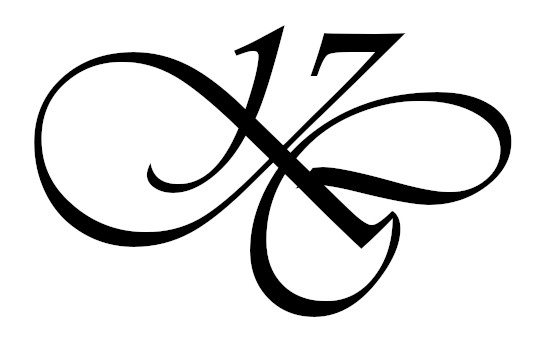
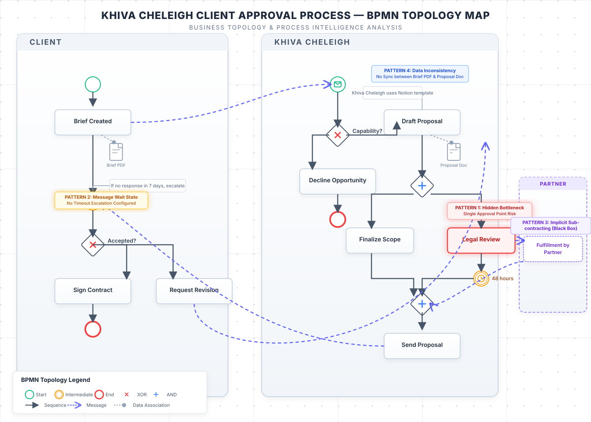

Freelance Client Approval — BPMN Topology Map
A cross‑company process modelled with BPMN, annotated with the four structural patterns I uncover for every client
This diagram maps the exact real‑world flow of a freelance client approval process – from initial request through payment. I have overlaid the four topology patterns that are invisible on a standard process map: hidden bottlenecks, message wait states, implicit sub‑contracting, and data inconsistency.

🔍 What you’re seeing: This BPMN diagram maps a real cross‑company freelance approval process. I've highlighted the four structural patterns every business topology analysis must expose – hidden bottlenecks, message wait states, implicit sub‑contracting, and data inconsistency. These are the same patterns I identify and quantify for paying clients.
Ready to see this applied to your business ecosystem?
Go to the Services Page →